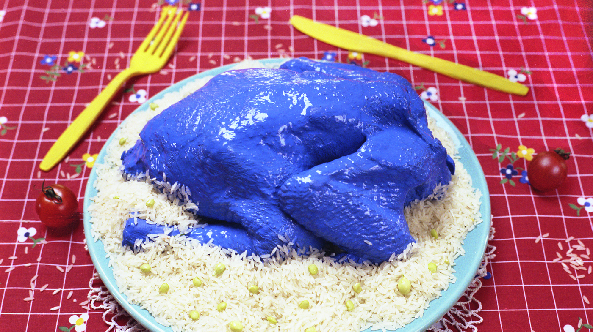

Blå kyckling med ris

- 1 kyckling
- 5 dL ris
- Valfri mängd blå färg
- Ett shrine
- Sätt ungnen på 250 grader
- Täck kycklingen med blå färg
- Lägg in kycklingen i ungnen i 40-50 min
- Be till Jugemu Jugemu Gokō-no Surikire Kaijarisuigyo-no Suigyōmatsu Unraimatsu Fūraimatsu Kuunerutokoro-ni Sumutokoro Yaburakōji-no Burakōji Paipopaipo Paipo-no Shūringan Shūringan-no Gūrindai Gūrindai-no Ponpokopii-no Ponpokonā-no Chōkyūmei-no Chōsuke
- Koka riset
- Servera!